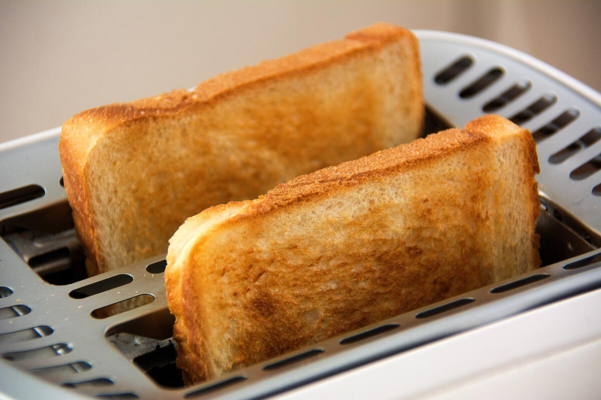

Блюдо белорусской, русской, украинской и молдавской кухонь из творога и муки, обжариваемые на сковороде в перекаленном масле. Особенность рецепта в том, что творог должен быть тщательно отжат и протёрт: чем лучше он отжат, тем меньше требуется муки для получения пластичного теста. В идеале, чтобы муки было совсем чуть-чуть.
Блюдо, приготовляемое на сковороде из разбитых яиц. Традиционный завтрак в Великобритании и Ирландии. Испанская яичница может подаваться на лепёшке. В русском языке различаются яичницы глазунья, в которой желток должен по возможности остаться целым, и болтунья, в которой яйца перемешиваются, что роднит её с классическими французскими омлетами.
Яичное жареное блюдо французской кухни. Яйца перемешивают, добавляют соль, перец и переливают на разогретую и смазанную сливочным маслом сковороду. Обжаривают до почти полного загустения яиц, затем сворачивают в трубочку или складывают пополам. Как правило, в омлет заворачивают начинку.

Основой для них является пористый белый хлеб с тонкой корочкой, обычно продаётся в упаковках порезанным на ломтики. Перед употреблением ломтики стандартной квадратной формы поджариваются с двух сторон в тостере или на сухой сковороде. Тостовый хлеб подаётся горячим на завтрак, а также сервируется к различным закускам.